Фенолы - кислородсодержащие ароматические соединения, в молекулах которых содержится одна или несколько гидроксильных групп (OH),
присоединенных к бензольному кольцу.
Простейший представитель фенолов - гидроксибензол, который и называют фенолом:
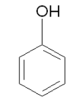
В зависимости от количества OH–групп в молекуле различают одно-, двух-, трёхатомные фенолы.
В структуре фенолов могут присутствовать другие заместители, например алкильные радикалы.
Для замещённых фенолов характерна изомерия углеродного скелета боковой цепи,
изомерия расположения заместителей в бензольном кольце.
Цель: изучение влияния различных бактерицидных концентраций фенола на плазму крови КРС.
Задачи:
- Подготовить инкубационные среды с концентрациями дезинфектанта: 0,66 %; 2 %; 3 %; 4 %.
- Проведение инкубации плазмы КРС в различных концентрациях ЧАС А. Рабочие концентрации дезинфектанта:
0,33%
2%
3%
4%
- Оценка кинетики денатурации белка в образцах с течением времени
- Оценка изменения мутности в образцах после удаления денатурированных белков
- Проведение электрофоретического анализа спектра белков образцов (конечных и промежуточных)
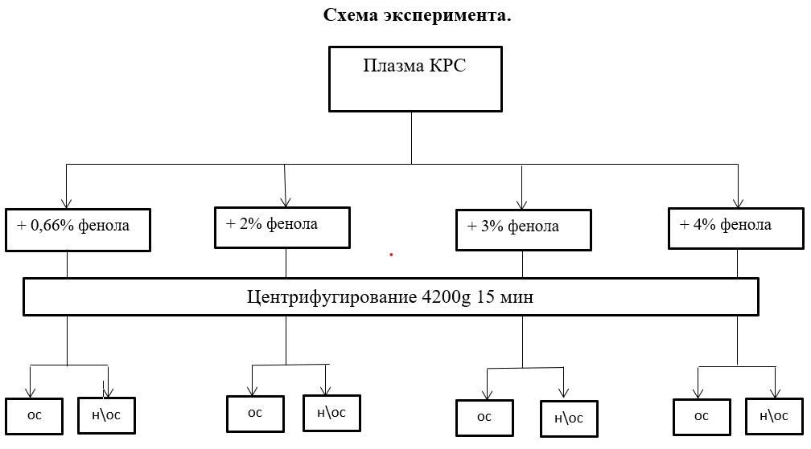
Ход работы
- Разморозили 60 мл плазмы
- Центрифугировали 10 мин 4200 g
- Измерили мутность, цветность, концентрацию белка
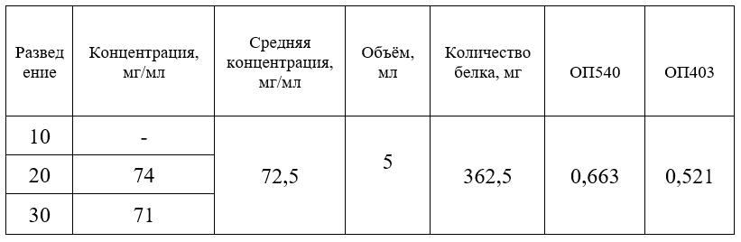
- Приготовили инкубационные среды
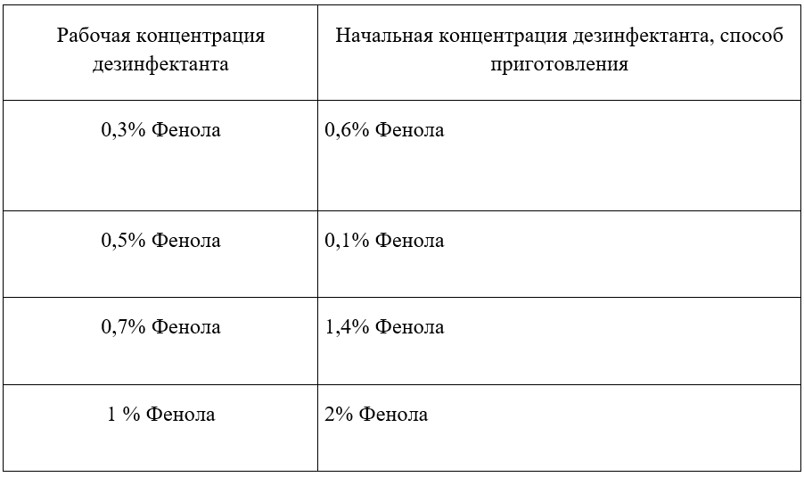
- Разделили плазму на 5 групп, соответствующих каждому раствору катона + контрольный образец
1 группа – 0,3 % Фенола, 2 группа – 0,5 % Фенол
3 группа – 0,7 % Фенола. 4 группа – 2 % Фенола
5 группа – контроль
- Добавили струйно медленно при перемешивании растворы из табл. 2 в соответствующие им группы плазмы.
5 мл плазмы + 5 мл инкубационной среды
- Контроль: 5 мл плазмы + 5 мл физ. р-ра
- Каждую группу разделили на 2 части по 5 мл, соответствующих каждому дню анализов. Общее количество образцов – 10
- Никаких наблюдаемых эффектов не наблюдалось
- Перемешали пробы 10 минут. Измерили мутность и цветность образцов
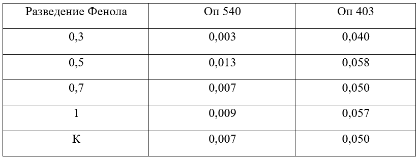
Эксперимент №1
Оставили на инкубацию при комнатной температуре на 1 день
Температура: 24 °С
- в пробирке с 1% образовались белые хлопья
- в пробирке с 0,3% образовалось желе
- в пробирке 0,7% образовалось желе
- в пробирке 0,5% образовалось желе
- контроль – нет изменений
- Перемешали пробу
- Измерили мутность
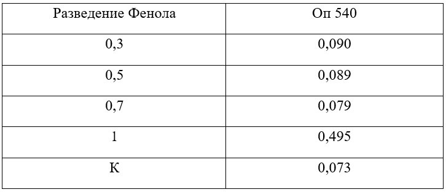
- Центрифугировали 4200g 15 мин
- Измерили мутность, цветность. В случае выпадения осадка, измерили мутность, цветность надосадка
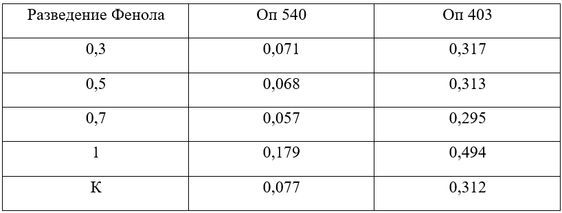
- Измерили объём надосадков. Измерили концентрацию белка
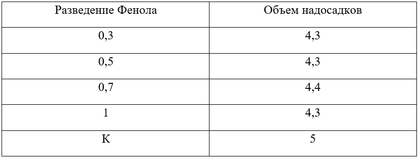
- Измерили концентрацию белка
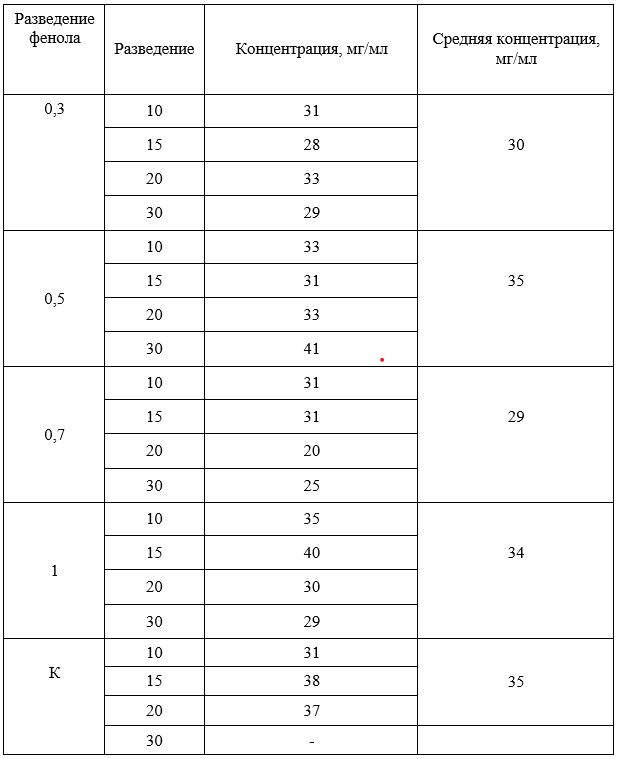
- Измерили массу осадков
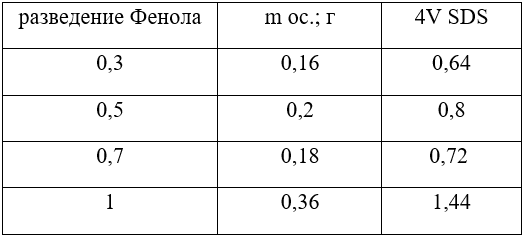
Осадок растворили в 4V SDS, записывая добавленные объёмы. Измерили концентрацию белка
- Измерили цветность мутность осадков
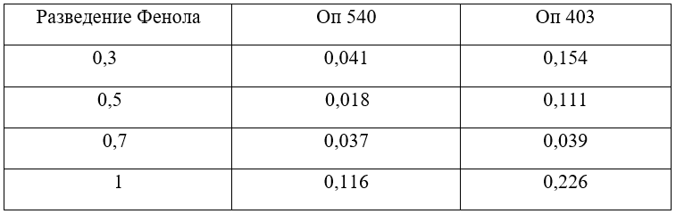
- Измерили концентрацию белка
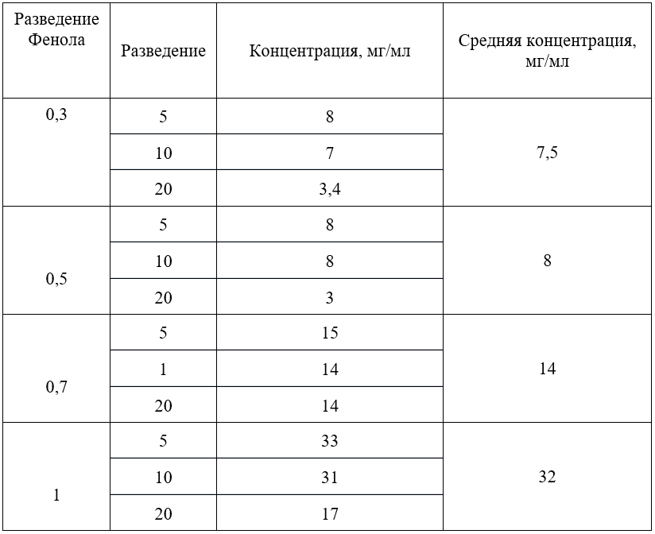
- Все образцы н/ос. (по 1000мкл) отобрали на электрофорез
- Провели электрофорез
Биохимические показатели образцов после инкубирования в различных концентрациях фенола 3ч/1д/7д/30д
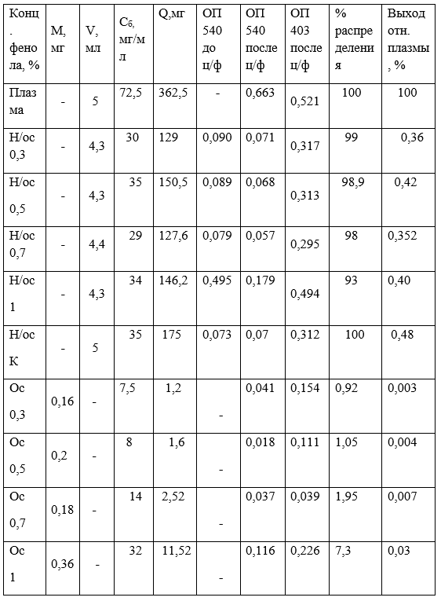
Результаты электрофореза
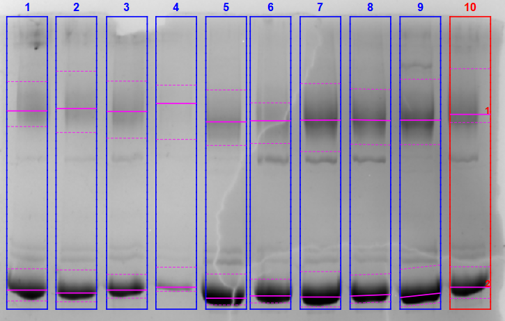
- 0,3Ос Ф
- 0,5Ос Ф
- 0,7Ос Ф
- 1Ос Ф
- 0,3Н/ос Ф
- 1Н/ос Ф
- 0,5Н/ос Ф
- 0,7Н/ос Ф
- КН/ос
Процентное содержание гамма – глобулиновой и альбуминовой фракции в образцах
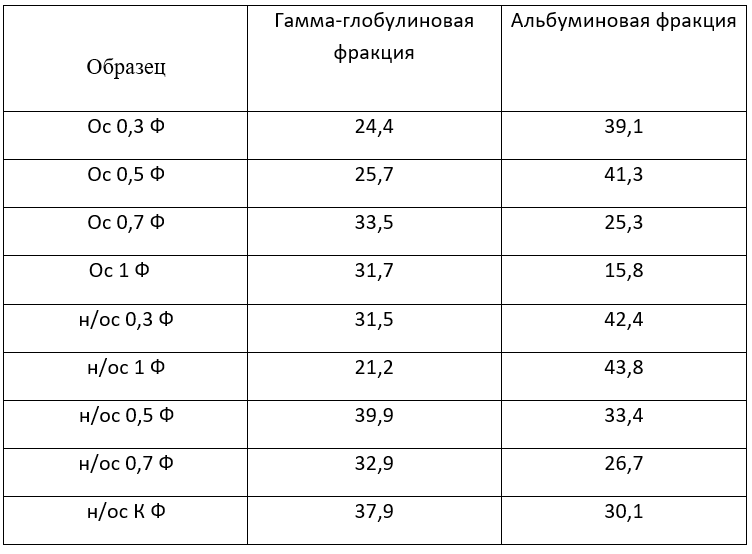
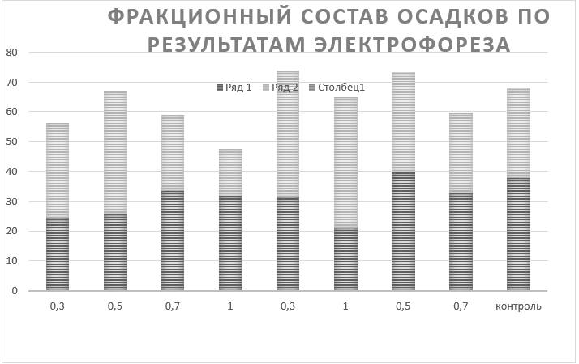
Электрофореграмма осадка 0,3Ф
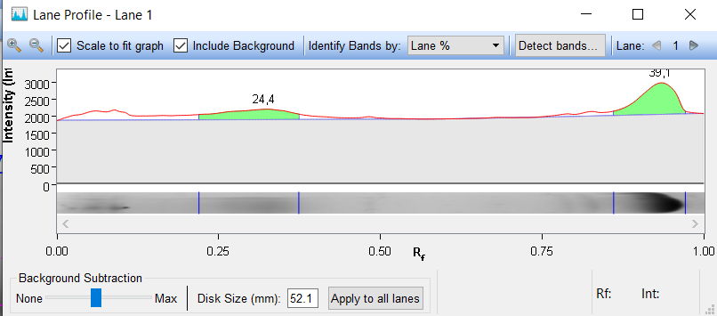
Катон
Домой